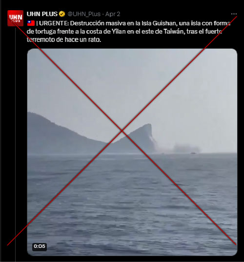
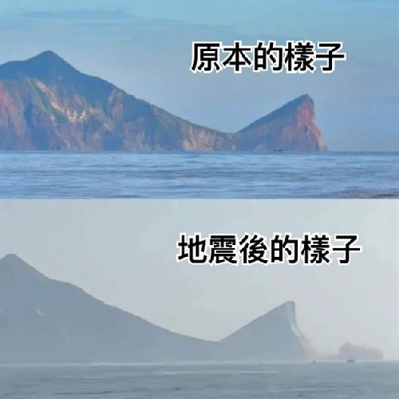

Claim reviewed:
"Massive destruction on Guishan Island after Taiwan earthquake"
"URGENT: Massive destruction on Guishan Island, a turtle-shaped island off the coast of Yilan in eastern Taiwan, following the strong earthquake a while ago," the post reads (originally in Spanish)."
(Spanish: URGENTE: Destrucción masiva en la Isla Guishan, una isla con forma de tortuga frente a la costa de Yilan en el este de Taiwán, tras el fuerte terremoto de hace un rato).

Rating: 1
False1="False", 2="Mostly false", 3="Half true", 4="Mostly true", 5="True"
Fact:
Image released by Taiwan's Tourism Administration (交通部觀光署), on April 3, 2024.
Top: Original shape. Bottom: After earthquake.
Taiwan's Tourism Administration said in a statement:
Top: Original shape. Bottom: After earthquake.
Taiwan's Tourism Administration said in a statement:
The head of the turtle (referring to the turtle-shaped island) off the coast of Yilan (宜蘭) on Guishan Island (龜山島), is not broken, just a small part fell off after the magnitude 7.2 earthquake.
Original version: "交通部觀光署東北角及宜蘭海岸國家風景區管理處澄清: 龜山島龜首未斷，是小部分掉落"
Reference:
交通部觀光署, "交通部觀光署-交通部觀光署東北角及宜蘭海岸國家風景區管理處澄清:龜山島龜首未斷，是小部分掉落," 交通部觀光署, Apr. 03, 2024. https://www.taiwan.net.tw/m1.aspx?sNo=0043442 (Accessed April 4, 2024).
交通部觀光署, "交通部觀光署-交通部觀光署東北角及宜蘭海岸國家風景區管理處澄清:龜山島龜首未斷，是小部分掉落," 交通部觀光署, Apr. 03, 2024. https://www.taiwan.net.tw/m1.aspx?sNo=0043442 (Accessed April 4, 2024).